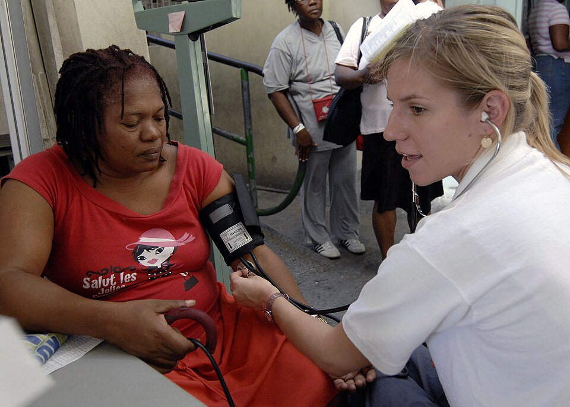
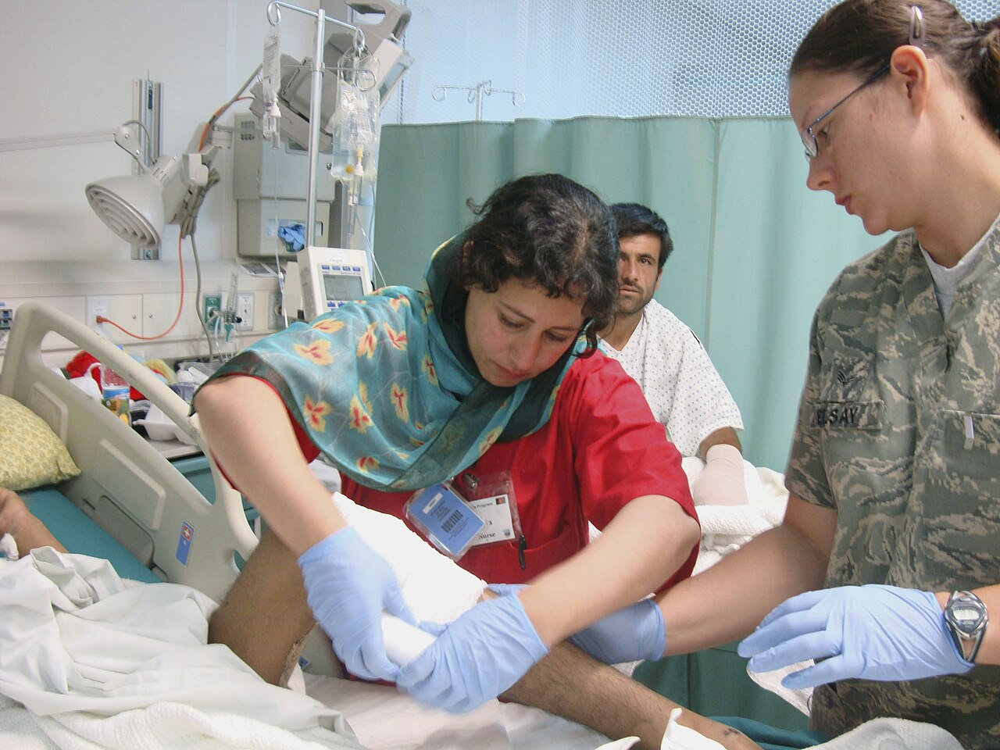
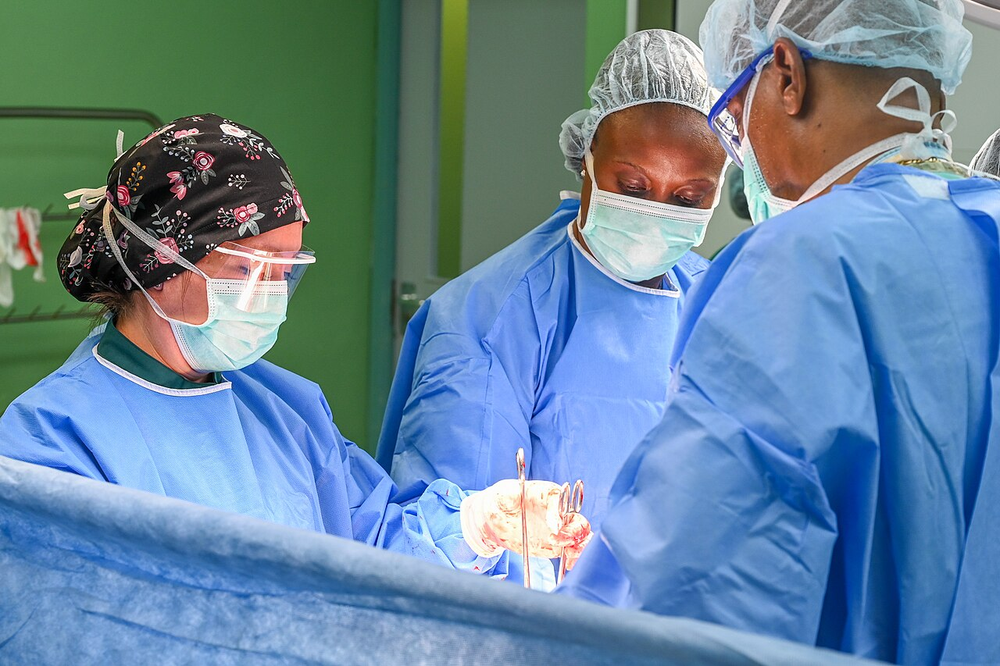
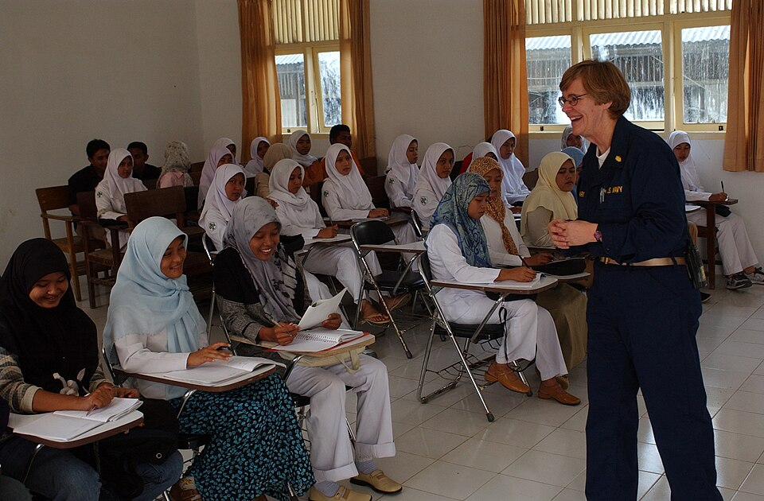

مسار التمريض
قيّم الحالة وتصرّف بأمان
قِس العلامات الحيوية، بلّغ الطبيب، ونفّذ أوامره ثم سلّم الحالة.
مريض افتراضي تحاوره، وفحوصات تطلبها، ثم تقييم يوضّح لك ما أصبت فيه وما فاتك.

اختر تخصصاً أو حالة طوارئ عشوائية.
اسأل وافحص واطلب ما تحتاجه.
شخّص أو نفّذ الأوامر بأمان.
سلّم الحالة واقرأ تقييمك.

قِس العلامات الحيوية، بلّغ الطبيب، ونفّذ أوامره ثم سلّم الحالة.
خذ القصة، اطلب الفحوصات المبررة، واكتب خطة واضحة للفريق.
ثلاث حالات تمريضية تتبع المريض من التجهيز إلى غرفة العمليات ثم الإفاقة، مع قائمة التحقق الجراحية لمنظمة الصحة العالمية.

«ما السؤال الذي طرحته؟ ما الدليل الذي جمعته؟ وكيف أثّر اختيارك على النتيجة؟»
تقرير التقييم يجيب عن الثلاثة بعد كل حالة.المحادثة والعلامات الحيوية والفحوصات في شاشة واحدة، وبعد التسليم تراجع خطواتك خطوة بخطوة.

واجبات الطلبة ونتائجهم في مكان واحد.
ابدأ حالتك الأولى، وتعلّم من كل قرار.
ابدأ بحالة طوارئ أو اختر تخصصاً للتدرب.
تابع المريض من التجهيز إلى غرفة العمليات ثم الإفاقة.
راجع إجابات كل طالب، أو أسند حالة جديدة.
| الطالب وزر التفاصيل | الحالة السريرية المختبرة | التشخيص السريري المستنتج | الفحوصات وتبرير الإضافي | الدرجة | إجراء المعلم |
|---|
حالة عشوائية من تخصص لا تعرفه مسبقاً.
اختر التخصص، ثم ابدأ الحالة.
جرّب تخصصاً آخر أو ابدأ حالة طوارئ عشوائية.
حالات أسندها لك الأستاذ الجامعي.
د. عبدالرحمن المجالي · تخطيط القلب والتروبونين.
د. عبدالرحمن المجالي · غازات الدم ووظائف الكلى.
ملاحظة د. عبدالرحمن المجالي: «تحليل ممتاز لنتيجة فحص البول وتعداد الكريات البيض، وانتباه سليم لاستبعاد الأشعة بسبب الحمل المبكر.»
لا يُنشأ تقرير التقييم والنتيجة إلا بعد إتمام جلسة محاكاة سريرية وتسليم ملخص الحالة. ابدأ حالة من الأقسام المتخصصة أو من غرفة الطوارئ العشوائية لعرض تقريرك التفصيلي.
--
مقارنة خطواتك المسجلة في الجلسة مع معايير السيناريو المرجعي
| المحور التدريبي | الوزن النسبي | الدليل الموثق من سجل المحاولة | الدرجة التقديرية | الملاحظة التوجيهية |
|---|
| محور الاستجواب / التحقق | الحالة في الحوار | الدليل والتوقيت في السجل | الأهمية السريرية في السيناريو |
|---|
| الفحص / الإجراء | حالة الطلب وتوقيته | صلة الفحص بالحالة وملاحظة السلامة |
|---|
| البند | ما كتبته عند تسليم الحالة | النموذج السريري المرجعي المقترح |
|---|
--
الجلسات التي تم إتمامها ضمن الحساب الحالي
| الحالة السريرية | نوع الجلسة | التاريخ | الفحوصات المطلوبة | نتيجة المراجعة |
|---|
للتجربة فقط. يُفضّل أن يشير العنوان إلى خادم وسيط عندك يحتفظ بالمفتاح، لا إلى مزوّد مباشرة. يُرسل فقط نص إجابتك وعنوان المحور ونقاط ضعفك. عند أي فشل يعود المدرب للتقييم المحلي.
جاهزة للطباعة أو الحفظ PDF.
تشهد وحدة التدريب والمحاكاة السريرية في منصة «نَبْض» بأن المتدرب/ـة:
قد أتمّ بنجاح متطلبات التدريب السريري التفاعلي على تقييم الحالات المرضية المتخصصة وحالات الطوارئ، شاملاً الاستجواب السريري المنهجي، قياس العلامات الحيوية، قراءة التحاليل المخبرية والصور التشخيصية، التحقق من معايير سلامة المريض، وتسليم الحالات وفق بروتوكول SBAR القياسي.
| الحالة السريرية المنجزة | نمط التدريب / القسم | تاريخ الإنجاز | الفحوصات المنفذة | النتيجة المعتمدة |
|---|
الحالات المسندة ونتائجها.
المطلوب: استجواب المريض، قياس العلامات، طلب تخطيط القلب وفحص السكر، وتسليم ملخص الحالة.
المطلوب: تقييم نقص الأكسجة والانتباه لموانع الصبغة الوريدية لدى مريض الكلى.
اضغط «عرض الإجابات» لفتح ملف الطالب.
| الطالب | التخصص والسنة | الحالة السريرية المختبرة | التشخيص المستنتج من الطالب | الفحوصات وتبرير الإضافي | الدرجة والنشر | إجراء المعلم |
|---|